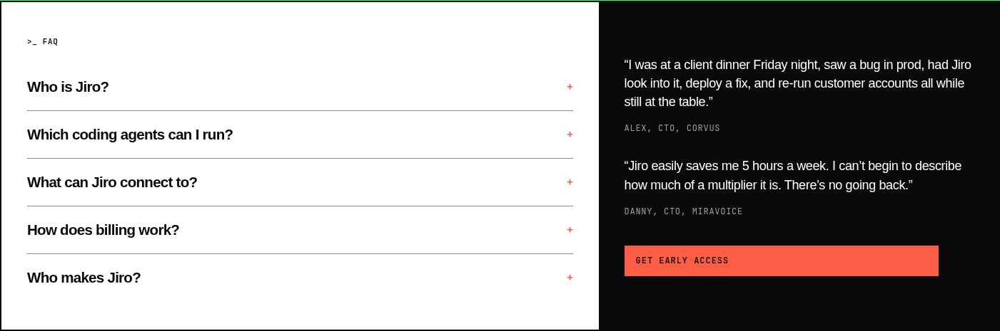

The black block contains two customer quotes and the orange button. Name and email are collected in the existing dialog. The desktop split remains 60/40; mobile stacks the FAQ first.
These captures show the local site. No signup API requests were made for the screenshots; submission and success are covered by the browser suite’s intercepted endpoint and the unchanged Lambda tests.
